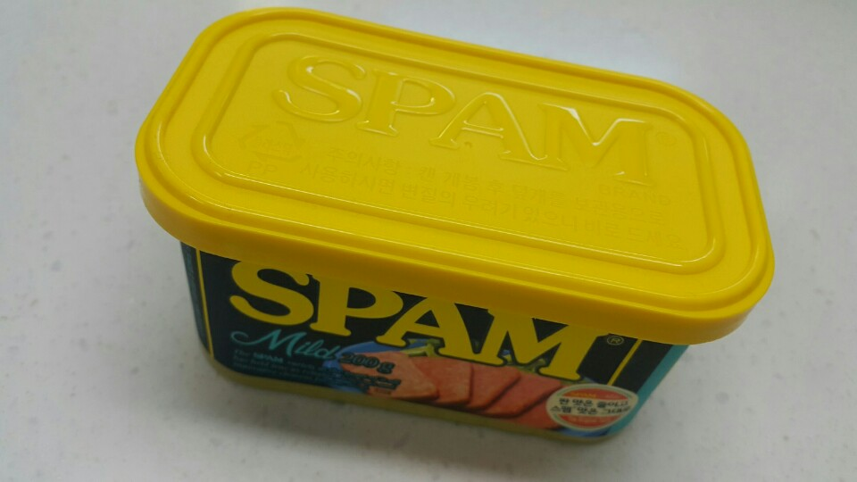
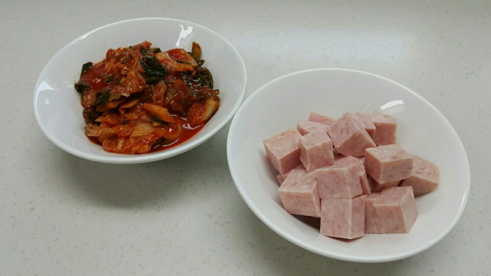
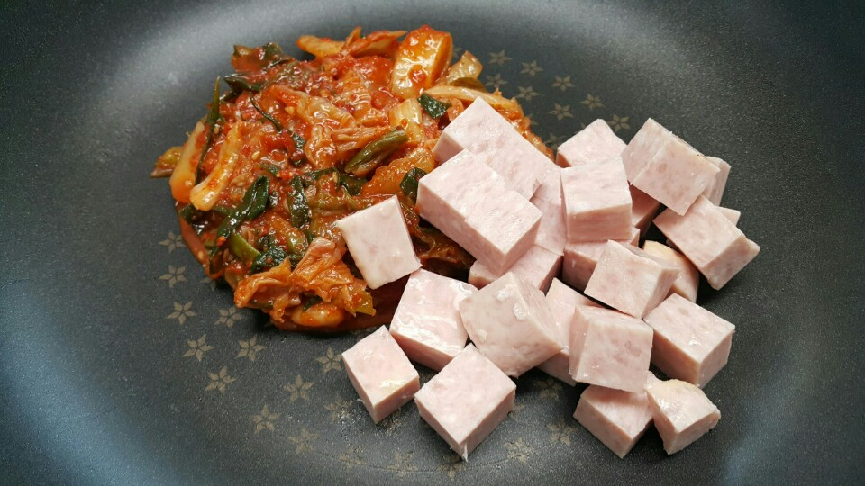
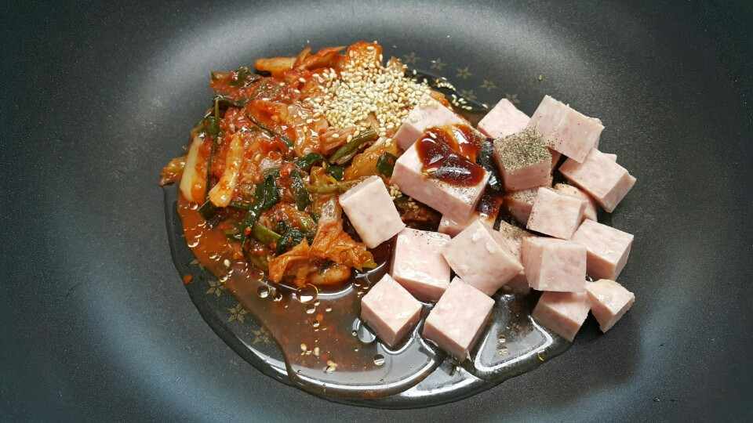
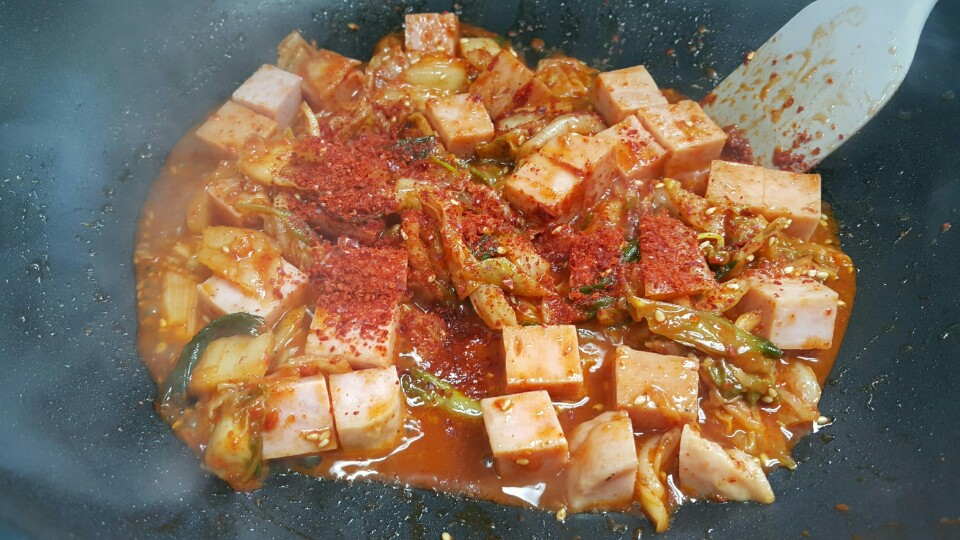
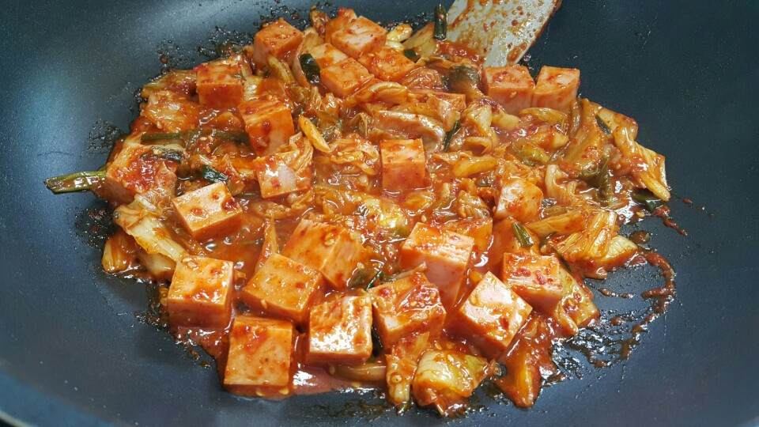

Ingredients
양념
- 굴소스1/2큰술
- 맛술1큰술
- 물2큰술
- 올리브유살짝두르기
- 후추톡톡
- 고춧가루1/2큰술
- 올리고당1/2큰술
Steps
- 스팸 준비해 줍니다

- 김치 숑숑~ 잘게 썰어주세요 스팸은 뜨거운 물에 퐁당 샤워 ~ 기름기와 불순물을 제거해 주시고 먹기좋게 도톰하게 썰어 줍니다

- 준비한 스팸ㆍ김치 팬에 담고

- 물2큰술ㆍ맛술1ㆍ굴소스반큰술ㆍ후추톡톡ㆍ올리고당반큰술ㆍ통깨솔솔ㆍ올리브유 적당히 둘러주세요

- 휘리릭~ 볶다가 고춧가루 반큰술 넣고 (위 양념 넣으실때 같이 넣으심 됩니당 )

- 슥슥~~ 볶아

- 밥위에 스팸김치 올려주시고
- 수분으로 구운 계란 올려주심 스팸 김치덮밥 만들기 끝입니당